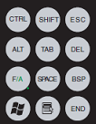
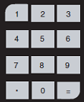
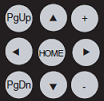

|
|
|
|
|
|
|
|
The Flex PC Box target machine provides you with the following keypads to input data:
The Windows keys enable you to perform typical Windows functions and change function key modes. The following image shows an example of the window keys.

The following table describes each Windows key in the keypad.
|
Key |
Description |
|
CTRL |
The CTRL, SHIFT, or ALT keys, when pressed with a function key, performs a special operation. For more information on creating special operations for these keys, see Section 24.5, Function Keys. For iPCs with an Intel® Graphics Media Accelerator Driver installed, if you press ALT+CTRL+Function Key at runtime, the function only works if you have disabled the hot keys. To disable the hot keys:
|
|
SHIFT |
|
|
ALT |
|
|
TAB |
Moves the cursor to the next tab stop. |
|
ESC |
Removes the cursor from a data input field without modifying the previous value. |
|
DEL |
Deletes the data to the right of the cursor position in a data input field. |
|
F/A |
Sets the function mode to OFF (Function mode) or ON (Alpha mode). For more information on the function keys and its keyboard equivalent in function mode and alpha mode, see F/A Key below. |
|
SPACE |
Adds one space in a data input field. |
|
BSP |
Deletes the data to the left of the cursor position in a data input field. |
|
Windows |
Opens the Windows Start menu. |
|
Application |
Opens the Windows popup menu. |
|
END |
Moves the cursor to the end of the data input field. |
You can change modes for the function keys using the F/A key, which allows you to toggle between OFF (function mode) and ON (alpha mode). Switch to function mode to enter function keys. Switch to alpha mode to enter alpha characters. The following table describes the function keys and its keyboard equivalent.
|
Flex PC Box Function Key |
Keyboard Equivalent at Runtime |
|
F/A Key OFF (Function Mode) |
|
|
R1 to R10 |
CTRL+F1 to CTRL+F10 |
|
F1 to F10 |
F1 to F10 |
|
F11 to F20 |
SHIFT+F1 to SHIFT+F10 |
|
R11 to R20 |
ALT+F1 to ALT+F10 |
|
F/A Key ON (Alpha Mode) |
|
|
R1 to R10 |
A to J |
|
F1 to F16 |
K to Z |
|
F17 |
: |
|
F18 |
/ |
|
F19 |
\ |
|
F20 |
* |
|
R11 |
( |
|
R12 |
) |
|
R13 |
? |
|
R14 |
^ |
|
R15 |
% |
|
R16 |
$ |
|
R17 |
@ |
|
R18 |
< |
|
R19 |
> |
|
R20 |
~ |
The numeric keys enable you to enter numbers 0 to 9 and other characters. The following image shows an example of the alphanumeric keys on the Alphanumeric Keypad.

The cursor keys enable you to change the string or numeric input in the data input field. The following image shows an example of the cursor keys.

The following table describes each cursor key in the keypad.
|
Key |
Description |
|
PgUp/PgDown |
Move up one page or move down one page. |
|
HOME |
Returns the cursor to the beginning of the line. |
|
+/– |
Increases or decreases the following values:
|
|
Move Up |
Moves the cursor up or down, left or right in a data input field. |
|
Move Down
|
|
|
Move Left
|
|
|
Move Right
|